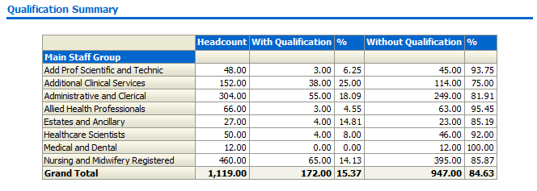
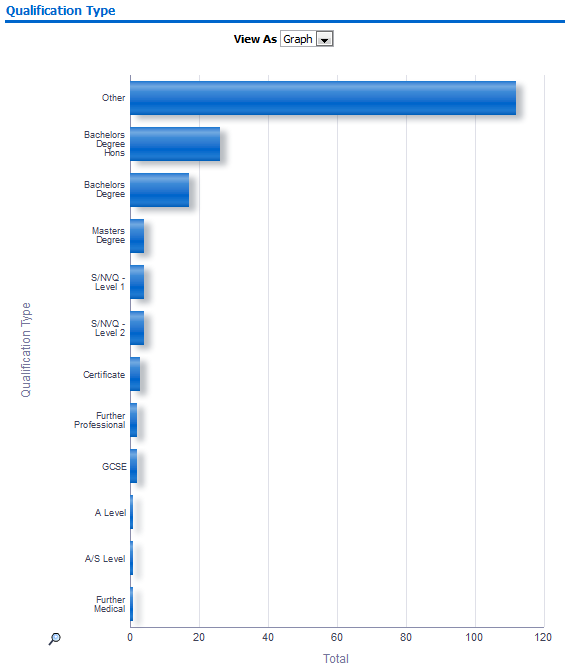
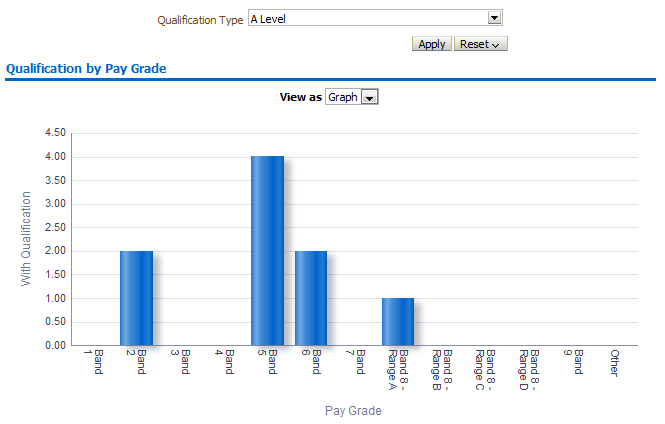

Qualifications Dashboard
Description
This dashboard is designed to provide the user with intelligence around qualifications data held within ESR.
Allocation
This dashboard is available to the following URPs:
XXX BI Administration
XXX Career Management
XXX Finance Reporting
XXX Finance Reporting and Hub Mapping
XXX HR Administration
XXX HR Administration (With RA)
XXX HR Management
XXX Recruitment & Applicant Enrolment Administration
XXX Recruitment & Applicant Enrolment Administration (With RA)
XXX Learning Administration
XXX Manager Self Service (Payroll Approvals Not Required)
XXX Manager Self Service (Payroll Approvals Required)
XXX Administrator Self Service (Payroll Approvals Not Required)
XXX Administrator Self Service (Payroll Approvals Required)
XXX Supervisor Self Service
XXX Supervisor Self Service (Limited Access)
Prompts
Organisation(s)
Staff Group(s)
Assignment Category
Person Type(s)
Employee Person Type(s)
Qualification Type
Effective Date (Default: Current Date)
Location
Qualification Summary
Description
This analysis is designed to show Headcount, Employees with a recorded qualification, those without a recorded qualification and the percentage by headcount of both.
Note: Due to the way this analysis is built, Headcount Figures are shown to two decimal places rather than zero decimal places.
Data Items
| Staff Group | |
|---|---|
| Headcount | |
| With Qualification | |
| Without Qualification |
View Selectors
None
Example Screenshot

Actions
None
Qualification Type
Description
This analysis is designed to show the number of qualifications grouped by qualification type.
Data Items
| Qualification Type | |
|---|---|
| Total |
View Selectors
Bar Graph (default) and Table
Example Screenshot

Actions
None
Qualification by Pay Grade
Description
This analysis is designed to show the number of qualifications grouped by pay grade. In table view, a headcount and headcount percentage figure is also provided.
Data Items
| Title | Description |
|---|---|
| Pay Grade | Grouped by Agenda for Change Pay Bands |
| With Qualification | |
| Headcount |
View Selectors
Bar Graph (default) and Table
Prompts
Qualification Type
Example Screenshot

Actions
None
Qualifications Detail
Description
This analysis provides a detail view at employee level of employee and qualification details
Data Items
| Employee Number | Qualification Title |
|---|---|
| Last Name | Qualification Subject Area |
| First Name | Awarded Date |
| Title | Awarded Body |
| Role | Establishment |
| Organisation Name | Grade Attained |
| Qualification Type |
Prompts
Qualification Type (Ability to select SNVQ, Non-SNVQ or Both)
Employees without a Specific Qualification
Description
This analysis allows a user to select a qualification from the available prompt and show details of all employees without that specific qualification (negative reporting). By default, all qualifications are included
Data Items
| Employee Number | Qualification Title |
|---|---|
| Last Name | Qualification Subject Area |
| First Name | Awarded Date |
| Title | Awarded Body |
| Role | Establishment |
| Organisation Name | Grade Attained |
| Qualification Type |
Prompts
Exclude Qualification Type
Qualifications Staff List
Description
This analysis provides a user with a complete Staff List including Qualification details.
Data Items
| Employee Number | Pay Grade |
|---|---|
| Last Name | Organisation |
| First Name | Qualification Type |
| Title | Qualification Title |
| Assignment Number | Qualification Subject Area |
| Position Number | Awarded Date |
| Position Title | Grade Attained |
| Establishment | Awarding Body |
Prompts
Qualification Type